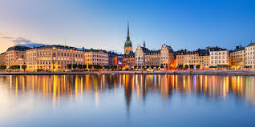

Стокгольм
Стокгольм - столиця Швеції, розташована на 14 островах. Відомий своїми музеями, старим містом (Gamla Stan) та королівським палацом.
Відомі та мальовничі міста країни
Стокгольм - столиця Швеції, розташована на 14 островах. Відомий своїми музеями, старим містом (Gamla Stan) та королівським палацом.
Гетеборг - друге за величиною місто Швеції, важливий порт та промисловий центр. Відомий своєю архітектурою та парком розваг Liseberg.
Мальме - третє за величиною місто Швеції, розташоване на півдні країни. Відоме своїм сучасним дизайном, зокрема хмарочосом Turning Torso.